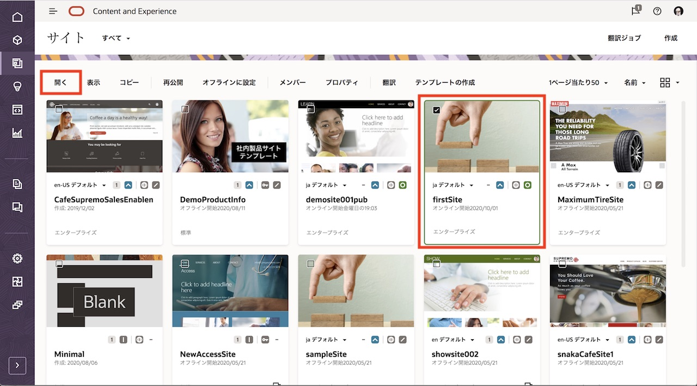
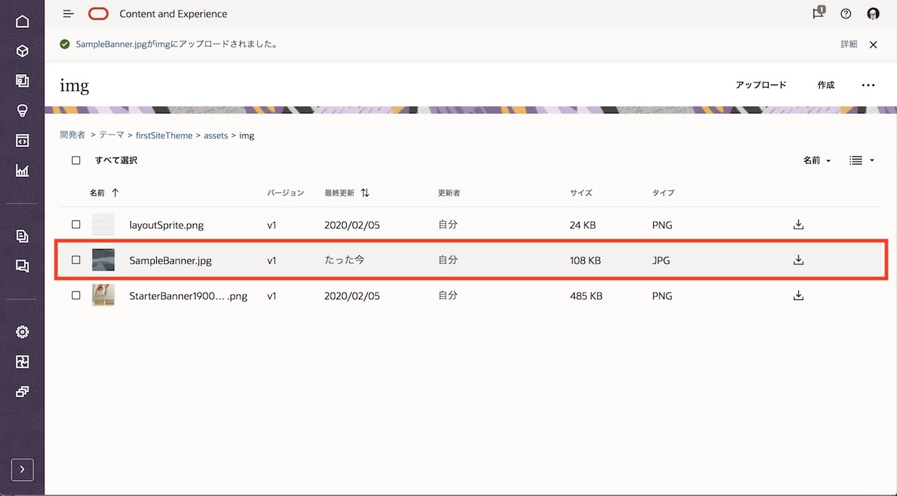
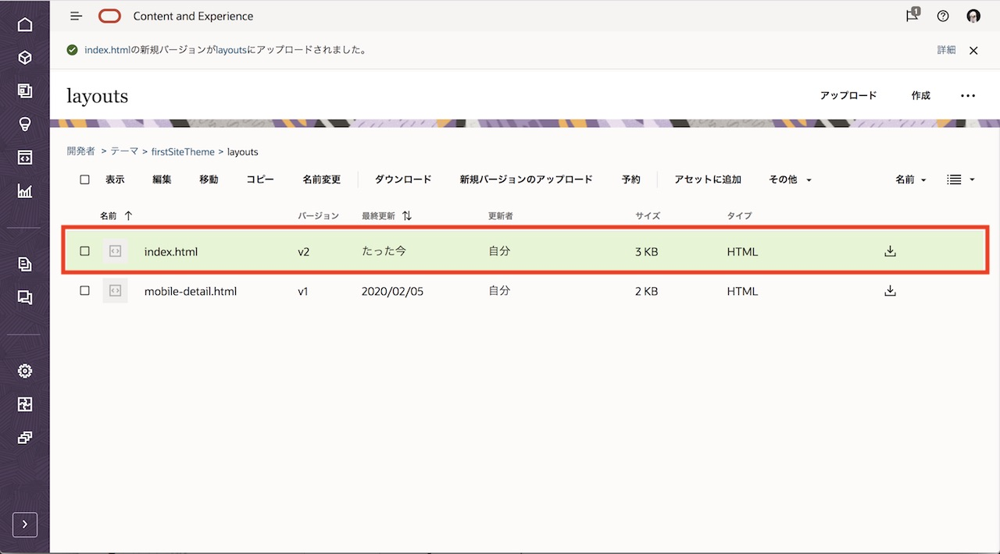
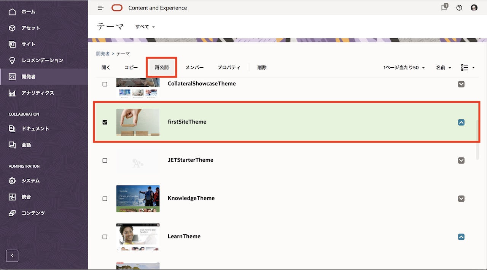

このチュートリアルは、Oracle Content and Experience (OCE)のデフォルトテンプレートを利用して作成されたサイトのバナー画像を変更する手順について、ステップ・バイ・ステップで紹介します
1. 前提条件・事前準備
1.1 バージョン
このハンズオンの内容は、Oracle Content and Experience 21.1.2 時点の内容で作成されています。最新の UI とは異なっている場合があります。最新情報については、製品マニュアルをご参照ください
- Oracle Content and Experience
- https://docs.oracle.com/en/cloud/paas/content-cloud/books.html
- https://docs.oracle.com/cloud/help/ja/content-cloud/index.htm（日本語翻訳版）
1.2 インスタンスの作成
OCEインスタンスが作成済であること。インスタンスの作成方法は、以下のチュートリアルをご確認ください
1.3 アセットリポジトリの作成
アセットリポジトリが作成済であること。リポジトリの作成方法は、以下のチュートリアルをご確認ください
1.4 Webサイトの作成
アセットを公開できるエンタープライズサイトが作成済であること。サイトの作成方法は、以下のチュートリアルをご確認ください
2. テンプレートおよびテーマについて
2.1 テンプレート
2.1.1 説明
OCEでサイトを作成する際に、サイト作成者は テンプレート を選択します。テンプレートには、サイト作成者がサイトの使用を開始するにあたり必要なものすべてが含まれます。例えば、サイト・コード・フレームワーク、サンプル・ページとコンテンツを含むデフォルト・サイト、スタイルが設定されたテーマ、イメージなどのリソース、カスタム・コンポーネントなどがすべて含まれます。
テンプレートには「デフォルト・テンプレート」と「カスタム・テンプレート」があります
-
デフォルト・テンプレート
-
OCEインスタンス内にあらかじめ定義されたテンプレート（事前定義済テンプレート）。サービス管理者による「デフォルト・サイト・テンプレートのインストール」およびテンプレートへのアクセス権限設定により、利用が可能となります
-
Blank、Collateral Showcase、New Product Launch、Products and Services Overview、StarterTemplateなど13種類を提供。詳細は以下ドキュメントをご確認ください
-
-
カスタム・テンプレート
-
Web開発者が作成したテンプレートで、デフォルトテンプレート同様に、サイトを構築するために必要な全ての要素(サイト、レイアウト、ナビゲーション、サンプル・コンテンツなど)が1つにまとめられています
-
カスタム・テンプレートは、「既存サイトからテンプレートを作成」により作成できます。詳細は以下ドキュメントをご確認ください
-
自社のブランディングに合わせた独自のテンプレートを作成する場合は、StarterTemplate を利用します
-
2.1.2 基本構造
テンプレートの基本構造は以下の通りです。詳細は以下のマニュアルをご確認ください
- https://docs.oracle.com/en/cloud/paas/content-cloud/creating-experiences/basic-template-structure.html
template_name
components /* 各コンポーネントの構成ファイル(詳細は割愛) */
template /* サイトのフォルダおよびファイルが含まれる */
assets /* UIのテンプレート詳細ページに表示される画像 */
content /* サイトで使用される管理コンテンツ */
layouts
pages /* すべてのページのJSONファイルを含む。nnn.jsonの形式で保管 */
variants /* サイトに対するすべての更新の詳細を含む */
_folder.json /* テンプレートのメタデータ(サイト作成者、サイト名、アイテムGUID、サイトの簡易説明および詳細説明など) */
_folder_icon.png /* UI上でサイトを表示する画像 */
componentsused.json
controller.html
siteinfo.json /* サイト名、関連付けられているテーマ、サイトのその他のメタデータを管理。変更しない */
structure.json /* ページ(親ページおよび子ページ)に関してサイトの階層を定義 */
theme /* テーマの構成ファイル(後述)*/
2.2 テーマ
2.2.1 説明
テーマは、色、フォント・サイズ、フォント・タイプ、ページ背景など、サイトの一般的なルック・アンド・フィール(全体スタイル)を定義 します。テーマにより、サイト内のページ間に視覚的な統一感を与えます。
ユーザーが新しいサイトを作成するためにテンプレートを選択すると、関連付けられているテーマが自動的にロードされます JETStarterTemplate と StarterTemplate を使用する場合、テーマは参照されるのではなく、自動的にコピーされます。サイト開発者は、StarterTemplate を使用してサイトを作成した場合、サイト作成時に自動的に作成されたテーマのコピーを編集します
2.2.2 基本構造
テーマには以下が含まれます。詳細は以下のマニュアルもご確認ください
- https://docs.oracle.com/en/cloud/paas/content-cloud/creating-experiences/basic-theme-structure.html
theme
assets /* JavaScript、CSS、画像、およびレイアウトで参照されるその他のサポートファイルを管理 */
css /* スタイルシート */
main.css
js /* JavaScriptファイル */
topnav.js
img /* 画像ファイル */
designs /* コンポーネントのスタイル・オプションを指定。design.cssおよびdesign.jsonを編集ます */
default
design.css
design.json
layouts /* ページ・テンプレートのためのHTMLファイル。サイトのページを表示する際に使用*/
publish /* 公開済サイトで使用するテーマを保存するディレクトリ */
responsepages /* エラー(404)を処理するための特別なページ */
404.html
viewport.json /* テーマのビューポート設定を指定 */
_folder.json /* テーマの名前とGUIDを指定 */
_folder_icon.png
components.json
3. バナー画像を変更する
このチュートリアルでは、すでに作成済みの firstSite の「ホーム」のバナー画像を別の画像に変更します。このチュートリアルでは以下の画像を利用します。右クリックよりローカル環境に保存（ダウンロード）してください

3.1 firstSite が使用するテーマを確認する
-
OCEにサインインします
-
サイト をクリックします
-
firstSite を選択し、プロパティ をクリックします

-
使用しているテーマを確認します。ここでは firstSiteTheme であることが確認できます

-
firstSite を選択し、開く をクリックします

-
ブラウザの別タブ（もしくは別ウィンドウ）でサイト編集画面が開きます。表示されるデフォルトのバナー画像を確認します

3.2 バナー画像をテーマにアップロードする
テーマに、新しいバナー画像（SampleBanner.jpg）をアップロードします。
-
開発者 をクリックします
-
「テーマ」の すべてのテーマの表示 をクリックします

-
前の手順で確認したテーマを開きます。ここでは、firstSiteTheme を開きます

-
assets→img フォルダを開きます

-
imgフォルダに、新しいバナー画像（SampleBanner.jpg） をアップロードします

3.3 レイアウトファイルを編集する
アップロードした新しいバナー画像（SampleBanner.jpg）を指定するように、レイアウトファイルを変更します
なお、サイト内のページで、どのレイアウトファイルを利用しているか？は、サイトの編集画面を編集モードで開き、「ページ」→（確認するページを選択）→「ページ設定」→「ページ・レイアウト」より確認できます

-
firstSiteTheme→layouts を開き、index.html をローカル環境にダウンロードします

-
index.html をテキストエディタで開きます
-
<header> タグ内の
background-imageのURLを、アップロードしたバナー画像（SampleBanner.jpg）のファイル名に変更し、保存します<!-- Header - set the background image for the header in the line below --> <header class="py-1 bg-image-full" style="background-image: url('_scs_theme_root_/assets/img/SampleBanner.jpg'); min-height: 370px;"> </header> -
index.html を選択し、「新規バージョンのアップロード」 をクリックします。前の手順で保存した index.html を新規バージョンとしてアップロードします

-
index.html のバージョンが v2 となることを確認します

3.4 確認
-
firstSite のサイト編集画面を開きます。すでに開いている場合は、ブラウザの再読み込み（リロード） を実行します
-
バナー画像が変更されていることを確認します

-
（オプション）サイト訪問者に対して公開されているオンライン・サイトに、この変更内容を適用する場合は テーマを再公開 します。今回の場合、firstSiteTheme を選択し、「再公開」 を実行します

-
（オプション）オンライン・サイトに対して、テーマの更新内容（バナー画像の変更）が適用されます

以上で、このチュートリアルは終了です。お疲れさまでした